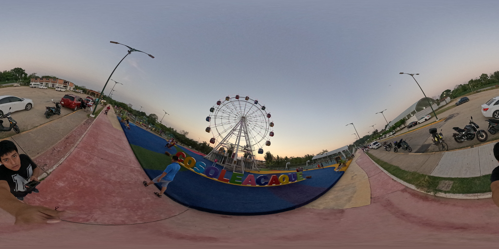
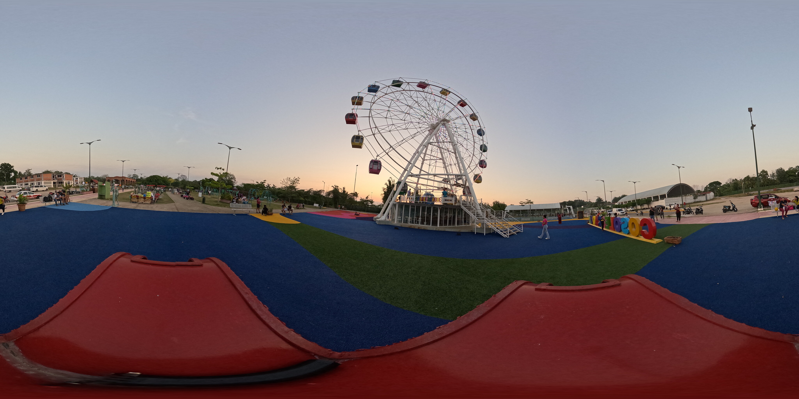

✦ Cosoleacaque · Veracruz ✦
Experiencia
Inmersiva
Cargando · Tour 360°
Tour 360° · Demo
Parque &
Rueda
Volver al menú
Modo VR
✦ Posiciones
Escena 1 / 2
—
—
Arrastra · Mirar alrededor
Click en círculos · Avanzar
Quest 3 · Modo VR disponible

